Eight shutters and one note
USER ACTION PENDING is the second teaser for QuestRunner. It's twenty-five seconds of someone stuck: a bed in the dark, a fridge opened and shut, a terminal waiting for input. Near the end an eye opens, and for a moment we see the other life. Reading. A hand reaching out. Rain on a pavement. A city at night.
That moment is a flashback of eight shutters, 0.2 seconds each, a one-frame white flash on every cut. At that speed you don't read the shots. You get a texture. I wanted the texture to feel observed, as if something were scanning these moments and taking notes.
I'd pointed at geometric-art.com early on as the flavour I meant: geometric art that reacts to the video under it. After the first pass missed, I wrote the note that became the brief:
“tiny distorted rectangles like tiny windows”my note, after the first pass
Everything below is how that sentence turned into a method. I worked through it with AI: I watched every render and said what was wrong; it wrote the code, measured things, and was wrong in interesting ways. Both of us were wrong more than once.
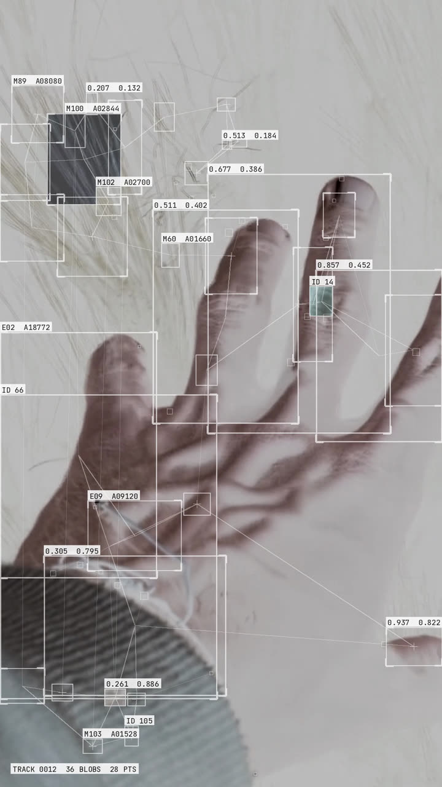
A shader can't look
The first reach was for what the video tool already had. There was a family of luminance shaders (engraving, crosshatch, halftone, dither), one per shutter. They did react to the picture, in the sense that bright areas became dense lines. But they re-render the whole frame as a pattern and flatten it to monochrome. It looked like an art filter, not like anything being measured.
After my note about tiny windows, the second reach was block displacement: a glitch shader that cuts the frame into small rectangles and shifts them. It took three passes to tune. The first mosaiced the whole image and turned it pink. The second still mushed it. The third, with pixelation at zero, left a clean picture with hundreds of tiny displaced blocks over it.
As a still it looked close. In motion it was obviously wrong. The rectangles live on a fixed lattice and move with noise. They land wherever the grid puts them, whatever the footage is doing, so a hand and a blank wall get the same treatment.
“its just dumbass pixels distorted/mosaic, but it doesnt react to object in videos”my note on that render, verbatim
It was a fair note. The useful part was realising why: reacting to content isn't a parameter that kind of effect has. No amount of tuning was going to get there. We had to start again from a method that measures the picture.
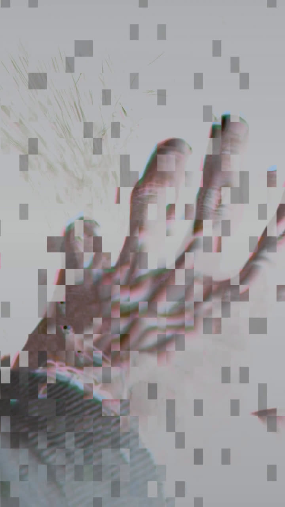
Reading the reference properly
So we went back to geometric-art.com and actually read it, this time with a browser instead of a guess. Its EDGE BOX ARCHITECTURE preset was the closest thing to what I had in my head: boxes that sit on the edges in an image, thin lines linking them, small labels beside them. It looks like an instrument has been pointed at a photo.
The important thing wasn't the look, though. It was that the tool names its own pipeline in its interface. Read left to right, the panels describe a method:
- 01FIELD EXTRACTION
Measure the image into a field of numbers.
attempt 2: Sobel edge energy
attempt 3: four masks - 02SHAPE SYSTEM
Put a shape wherever the measurement says.
attempt 2: grid peaks
attempt 3: connected components - 03CONNECTIONS
Link the shapes to each other.
nearest neighbours, a sparse chain - 04SIGNAL LAYERS
Label them with what was measured.
white chips: ID, position, area
Measure, place, link, label. The glitch shader skipped the first step entirely, which is the whole reason it couldn't react. None of the site's code is used anywhere in this project. What I took from it is that four-step idea, and each attempt from here on is an independent build of it against our own footage.
An edge field, and the horizon
The first honest attempt was a straight reading of that pipeline. Take the Sobel edge magnitude of each frame and average it into a grid of 22-pixel cells. That grid is the field. Pick the strongest cells greedily, suppressing each one's neighbours so boxes don't pile up, until there are 145 to 195 of them. Draw a box at each and fill it with the frame sampled a few pixels along that cell's own gradient, so the distortion inside a box depends on what's under it. Label each box with a hex ID and its measured energy, and link nearest neighbours with hairlines.
The first build normalised edge energy from minimum to maximum. That fails on any frame with one dominant contour. The strongest line in the frame sets the maximum, and everything else is scaled down against it. A horizon took the entire budget, while a face two stops darker scored zero. The first render had fifteen boxes strung along a skyline.
The fix was to score each cell half on its absolute energy and half on its energy relative to its own neighbourhood, both normalised between percentiles (p55 to p99.2) rather than extremes. The relative term puts boxes across a subject instead of along the hardest line. We also swapped out two plates, both a runner on flat grass, because a field has nothing to find in one hard horizon and grass.
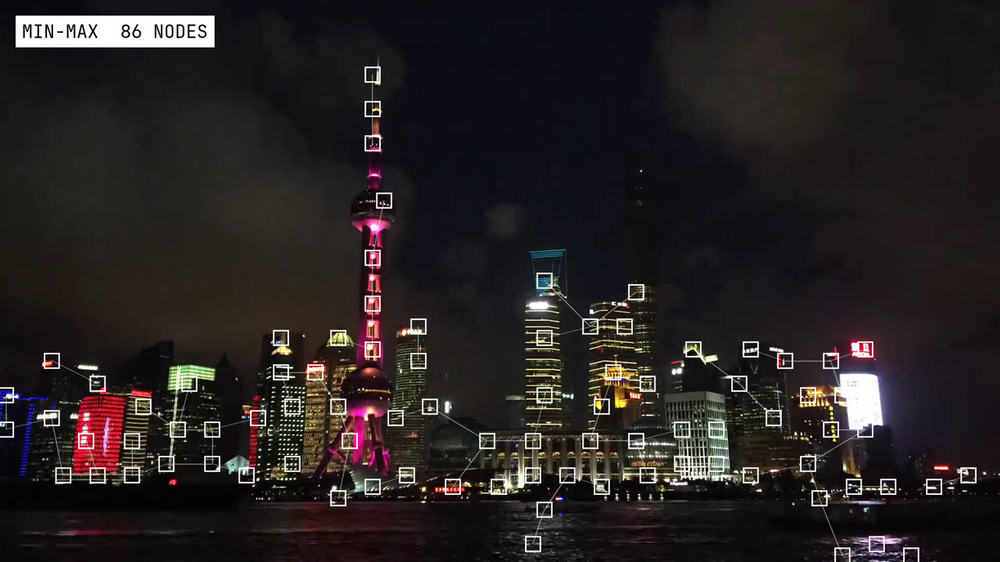
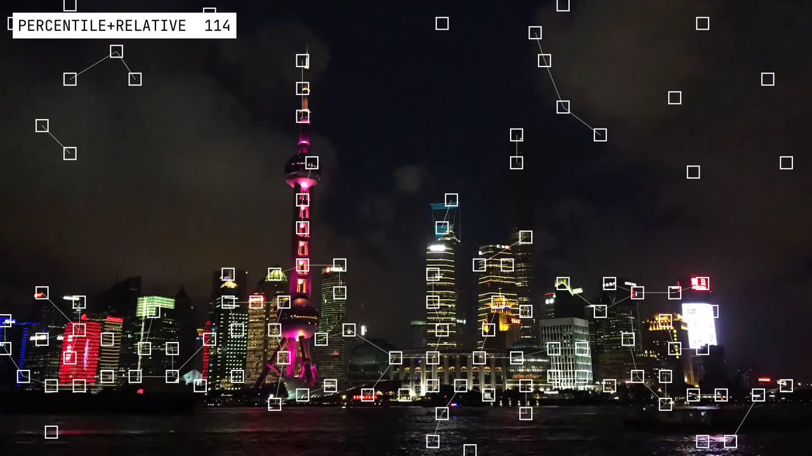
It did react. The boxes found the lit windows in the city, the tendons of a hand, the railing of a balcony. It was the first version that was about the footage at all.
It still looked like a mesh laid over the picture, not like the picture being read. My next note asked for three things:
“add connecting lines, some numbers with solid white as background, rectangles with random and more variable sizes”my note on the edge-field render
Lines and chips are drawing details. Variable size isn't. In a grid method the grid decides the size. A box is as big as a cell, give or take some jitter, because the thing being measured is a cell. To get a box the size of a building and one the size of a window in the same frame, the box has to come from the thing, not from the grid.
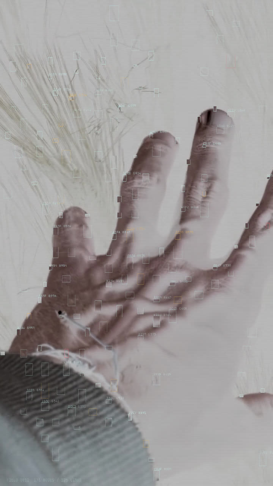
Let the thing decide the box
This time we looked up how the look is usually made instead of inventing one. Most of the tutorials and tools that produce it come back to TouchDesigner's Blob Track: find the distinct shapes in a frame, box each one, and follow it from frame to frame. It's an old, proven computer-vision idea, and it answers the size problem directly. We rebuilt it offline in Python.
Detect: four masks
Each frame is reduced to grey at a working resolution (540 px on the short side) and thresholded four ways. Bright: the top 10% of a lightly blurred image. Dark: the bottom 9%. Edges: Canny, dilated so that nearby edges fuse into regions. Motion: the difference from three frames back. Each mask is split into connected components, and every component is a candidate whose box is simply its own bounding box. A lit window gets a small box, a tower gets a tall one. That's the variable size, for free.
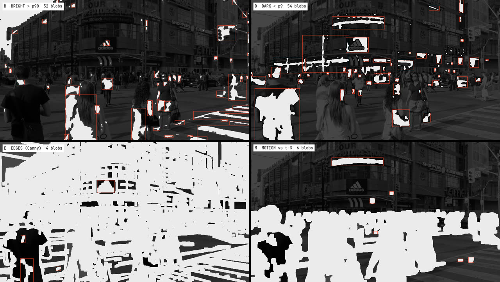
Candidates are scored on size, local contrast, and double if they're moving. They're then picked with a quota per size class (6 large, 11 medium, 15 small), skipping any that overlap one already picked by more than 45%. The quota keeps a frame from filling with only big boxes or only specks.
Track: IDs that stay put
Each box is matched to last frame's boxes by overlap plus how close their centres are. A match keeps its ID and moves 55% of the way toward the new position, which smooths the jitter. So ID 07 is the same tower for as long as the tower is there. Separately, a few dozen corner points are followed with Lucas-Kanade optical flow and drawn as small squares, so there's fine motion between the boxes too.
Draw: the numbers are real
Boxes get white outlines, with corner ticks on the large ones and a crosshair on some. Each links to its two nearest neighbours, and a sparse chain runs across the frame. The chips are solid white with black text, and they read actual measurements: an ID, the normalised centre, or the blob's kind and area. About 18% of boxes invert what's inside them and 12% show the frame shifted a few pixels. Those are the tiny windows from the note, finally in the right places.
Every “random” choice is a hash of the track ID, so a box keeps the same look for its whole life instead of flickering.
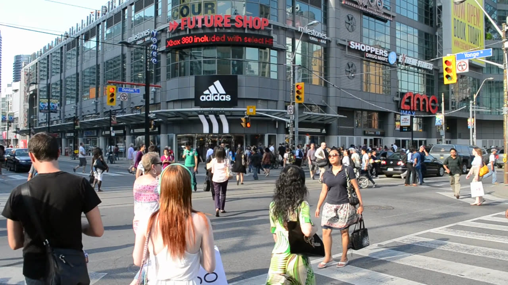
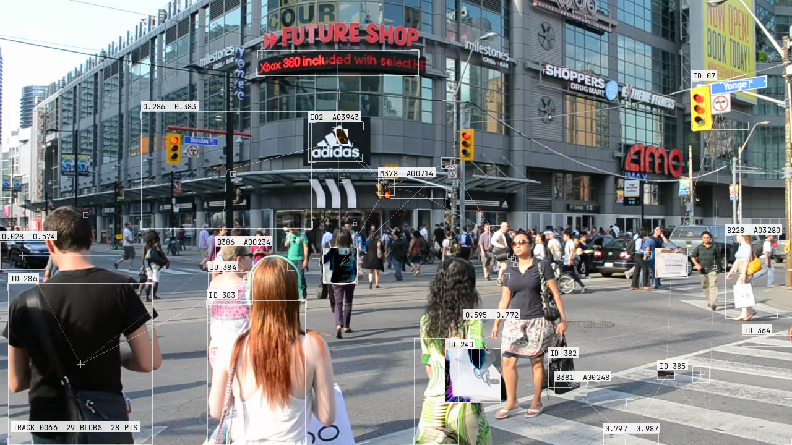
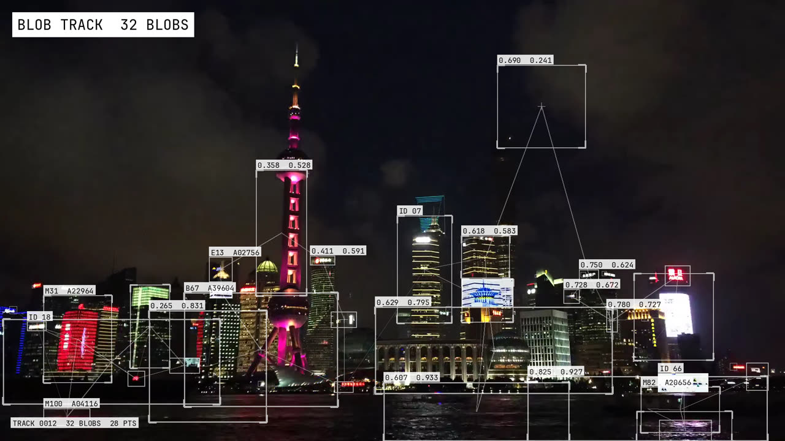
Making it sit in the picture
The shapes were right on the first render of this version. My note on it was mostly approval, with one change:
“the blob shapes are perfect now, but the color has to slightly blend (use screen blend mode with less opacity or whichever works)”my note on the first blob-tracking render
Pure white lines drawn over the frame read as a layer on top of the video. Screen blending makes them part of it. All strokes (boxes, lines, markers) are drawn white onto their own transparent layer, and then that layer is screened onto the frame once, at 0.70:
// per pixel, per channel, values 0..1
out = base + (1 − base) · stroke · 0.70
Over a dark city the lines glow and take on the warmth of the lights. Over a pale plate they nearly vanish, which is right, because there's less contrast to report.
Two details mattered. First, the strokes need their own layer. Screening each line straight onto the frame means that wherever lines cross, they add up and brighten, and the whole thing goes flat. Second, the chips don't screen. Screening black changes nothing, so a screened chip's black text would simply disappear into the picture. The chips are a normal blend at 0.86, so the numbers stay sharp with a hint of the picture through the paper.
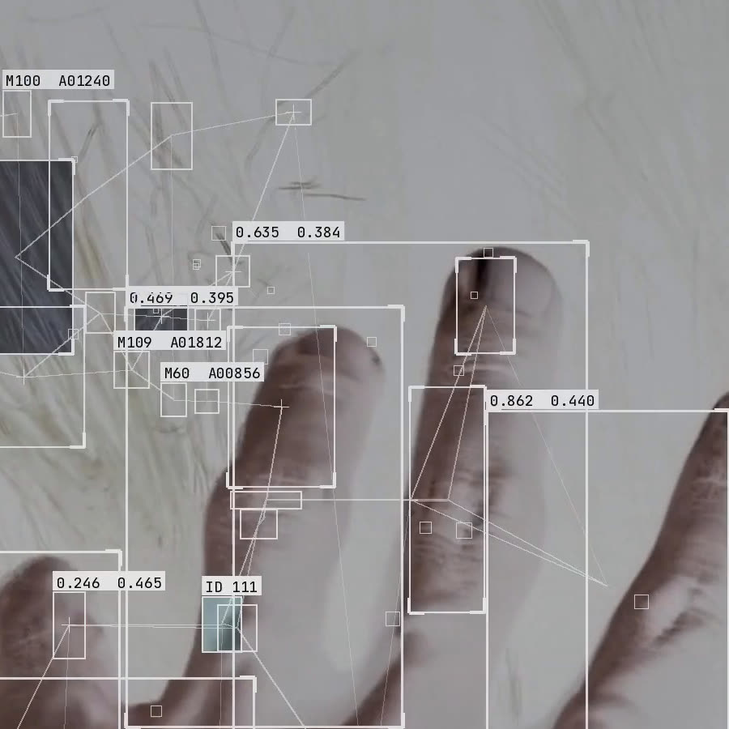
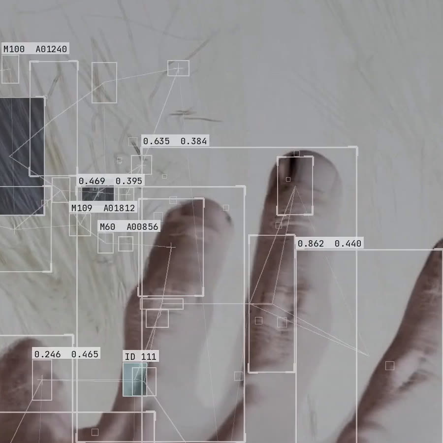
Taking it to the browser
The teaser shipped. But the effect lived in one script inside one video project, and I wanted to use it on anything: upload a clip, preview it, download it, nothing to install. That meant running it in a browser, and there were three ways to do that. Rather than argue about them we built all three on the same frames and measured.
1080 × 1920 frames, M-series Mac, Chrome. Pyodide also took 8.9 s to load before the first frame. “Match” means every box and every ID agreed with Python, mean overlap 1.000.
Both ports reproduced Python exactly, box for box and ID for ID, so accuracy didn't decide it. Speed did. The OpenCV.js port runs at about 180 ms a frame, which means a ten-second clip takes about a minute. That's fine for process-then-play, and I'd rather have that than a nine-second blank screen before anything happens.
The tab that froze
The first time I opened the spike page, both outputs were blank and the automated browser just hung. There was no error and nothing in the console. The tab had stopped responding.
The cause is a small, nasty quirk. The OpenCV.js build exposes a global cv object that is also a thenable: it has a then() method, and that method resolves with cv itself. So await cv gets cv, sees it's thenable again, awaits it again, and never stops. It's an infinite microtask loop with no error, and the page never gets another turn to paint.
The fix is two lines: wait for the runtime's own callback, then delete the trap. The shipped module does exactly this, and it's written up as the first entry in the skill's list of traps, so nobody has to find it the way we did.
Two other porting details are written up there too, because an exact match depends on them. Python's int() truncates toward zero, while Math.floor moves negative offsets by a pixel. And percentiles have to interpolate the way numpy does, not by nearest rank. A parity test now runs the JS module against the Python reference in headless Chrome and fails below 95% agreement.
// what froze the tab await cv; // cv.then(resolve) → resolve(cv) → …forever // what ships in blobtrack.js if (!cv.Mat) await new Promise(r => { cv.onRuntimeInitialized = r; }); delete cv.then; // never await cv again
What shipped, and what's left
In the teaser the effect is on screen for 1.6 seconds. Most people will register it as a flicker of something technical and move on, and that's the job. Below are four of the eight plates as they went into the film.
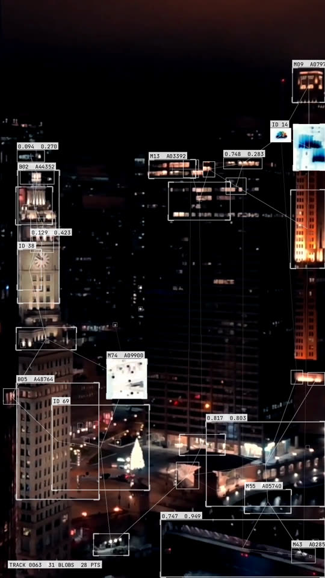
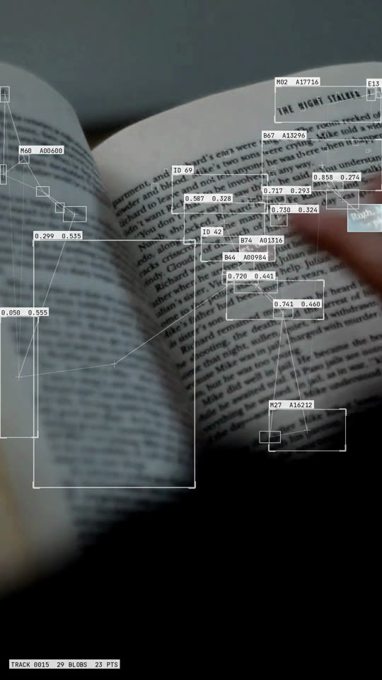
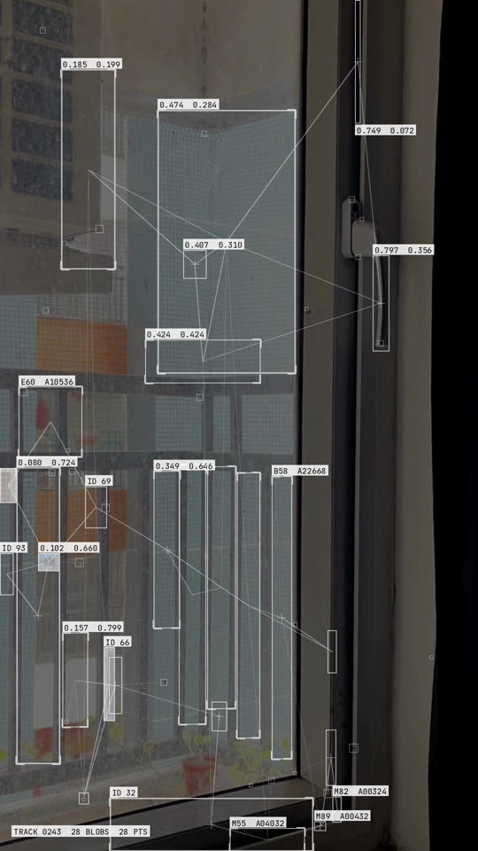
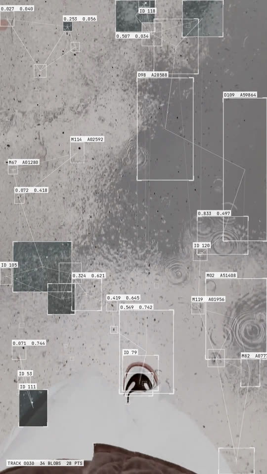
What I'd take from this into the next effect:
- If an effect never reads the picture, no setting will make it react to the picture. Check that before you start tuning.
- Normalise on percentiles, not the minimum and maximum. One extreme value shouldn't get to set the scale for everything else.
- Let the thing decide the box. Sizes that come from the content look measured. Sizes that come from a grid look like a pattern.
The effect is now its own small project. There's a web app that runs it on any clip in the browser, a Python command-line tool, a browser module, and a skill for AI coding agents that picks the right one of those for whatever project it's dropped into. For tools I haven't touched, like TouchDesigner, After Effects or Unity, there's a written spec of the method.